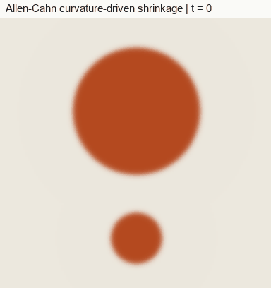
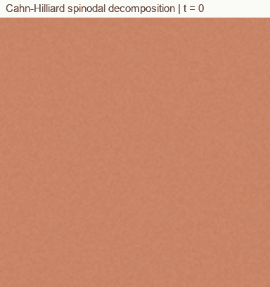

Curriculum/Computational methodsCMS 505
Phase-field modelling
Microstructure is made of interfaces: grain boundaries, phase boundaries, solidification fronts. Tracking each one explicitly through merging, splitting and branching is a bookkeeping nightmare. Phase-field models sidestep it by describing the whole microstructure with smooth fields and letting the interfaces take care of themselves.
- Reading time
- about 12 min
- Level
- Graduate: simulation methods
- Describe a diffuse interface and how it relates to interface energy and width.
- Write the Allen–Cahn and Cahn–Hilliard equations and say which describes which kind of process.
- Explain spinodal decomposition, curvature-driven motion and coarsening from the equations.
- List the inputs a quantitative phase-field model needs and the numerical constraints on grid and time step.
1. The diffuse-interface idea#
In a sharp-interface description, two phases are separated by a surface of zero thickness, whose motion must be computed and tracked as part of the problem. In a phase-field description, an order parameter φ(r, t) takes one constant value inside each phase (say φ = −1 and φ = +1) and varies smoothly across a thin transition layer. The interface is wherever φ passes through its mid-value, found after the fact. The motion follows from the equations without special rules, and topology changes (two grains merging, a particle splitting, dendrite arms branching) need no extra treatment.
Two types of field appear:
- Non-conserved order parameters, such as phase identity or crystal orientation, can change locally without the quantity being transported from elsewhere (a region of liquid can freeze in place).
- Conserved fields, such as composition, can change only by diffusion: material that arrives at one place must leave from another.
Many materials problems combine both, such as solidification of an alloy (a phase field plus a concentration field).
2. The free-energy functional#
The model is built on the total free energy of the microstructure as a functional of the fields:
F[φ, c] = ∫V [ f(φ, c, T) + (κφ/2) |∇φ|² + (κc/2) |∇c|² + fel + … ] dVThe bulk term f carries the thermodynamics: for a two-phase system it has a double-well shape with a minimum for each phase, for example f = (A/4)(φ² − 1)². In alloys it is taken from CALPHAD (see thermodynamics). The gradient terms penalise sharp changes, so they set the cost of an interface: without them the field would jump discontinuously to whichever well is lower at each point. The competition between the double well (which wants φ at a minimum) and the gradient term (which wants φ uniform) gives a finite-width interface.
For the double well above the equilibrium one-dimensional profile solves κφ″ = f′(φ), and the solution can be written exactly:
φ(x) = tanh( x / ℓ ), ℓ = √(2κ/A), γ = (2√2 / 3) √(κA)The parameters κ and A are thus tied to two physical quantities: the interface energy γ and an interface width (about 2ℓ from the 10–90% points of the profile). Setting them to reproduce a chosen γ and width is the first step in building a model. Additional terms add other physics: elastic energy for misfitting precipitates, magnetic or electric energy, anisotropy in κφ (which yields crystal facets and dendrite arms).
3. Allen–Cahn: non-conserved fields#
The simplest dynamics is relaxation toward lower free energy at a rate proportional to the driving force:
∂φ/∂t = − L δF/δφ = L [ κ ∇²φ − f′(φ) ]with L a kinetic coefficient (interface mobility). This is the Allen–Cahn equation (originally for antiphase boundaries). Two consequences follow. The free energy never increases, dF/dt ≤ 0, so the system moves downhill. And an interface moves with normal velocity proportional to its mean curvature K, toward its centre of curvature:
v = − L κ K → for a circle of radius R in two dimensions: d(R²)/dt = −2 L κso the area of a circular grain shrinks linearly with time, and the smaller of two circles vanishes first, the essential mechanism of normal grain growth. The animation below solves the equation for two circular regions of different size: curved boundaries retreat, the small circle disappears first, and the large one shrinks more slowly because its curvature is lower.

For many grains, one uses a set of order parameters φ1, …, φn, one per orientation, coupled so that at most one is large at any point (the Fan–Chen model for grain growth) or constrained to sum to one (multi-phase-field models). Misorientation-dependent mobility and energy enter through the coefficients.
4. Cahn–Hilliard: conserved fields#
For a conserved quantity such as composition, the flux is driven by the gradient of the chemical potential μ = δF/δc (the thermodynamic driving force from the diffusion page), and the equation is a continuity equation:
∂c/∂t = ∇ · ( M ∇μ ), μ = f′(c) − κ ∇²cThis is the Cahn–Hilliard equation. It is fourth-order in space (the ∇² acts on μ, which already contains ∇²c), conserves the total amount of solute, and also lowers the free energy.
Spinodal decomposition
Suppose a homogeneous alloy with c = c0 sits inside the spinodal, where f″(c0) < 0 (see the Gibbs energy curve). Linearise the equation for a small fluctuation of wavenumber k: it grows as exp[R(k)t] with
R(k) = − M k² ( f″(c0) + κ k² )For f″ < 0 this is positive in a band of wavenumbers (k < √(−f″/κ)): long-wavelength fluctuations are slow because material must travel far, and short-wavelength ones are suppressed by the interface-energy cost. In between there is a fastest-growing wavenumber, km = √(−f″/2κ), which sets the characteristic spacing of the early microstructure, λm = 2π/km. No nucleation barrier is involved; any random noise seeds the pattern. After the compositions reach the two equilibrium values, the structure coarsens: small domains dissolve and large ones grow to lower the total interface area, with a mean domain size increasing as t1/3 (diffusion-limited coarsening).

5. Models for materials#
| Process | Typical model | Key point |
|---|---|---|
| Solidification of alloys | Wheeler–Boettinger–McFadden (WBM); Kim–Kim–Suzuki (KKS); thin-interface models with an anti-trapping current (Karma) | KKS separates interface and bulk contributions by assuming equal chemical potentials inside the interface; the thin-interface limit allows an interface much wider than physical while still giving correct kinetics |
| Grain growth and recrystallisation | Fan–Chen multiple order parameters; multi-phase-field (Steinbach) | Boundary energy and mobility depend on misorientation; stored energy drives recrystallisation |
| Precipitation and spinodal decomposition | Cahn–Hilliard with elastic energy (Khachaturyan, Chen) | Misfit strain selects shapes and alignment of precipitates |
| Diffusional and displacive solid-state transformations | Concentration field plus phase fields; martensite models with transformation strain | Variants and habit planes from elastic energy |
| Fracture | Variational approach (Bourdin–Francfort–Marigo; Miehe) | A damage field φ ∈ [0,1] degrades stiffness; regularised crack surface energy |
| Domain structures in ferroelectrics and ferromagnets | Time-dependent Ginzburg–Landau equations | Polarisation or magnetisation as order parameter |
| Corrosion, electrochemistry, sintering | Coupled phase-field with transport | Moving boundaries and multiple physics |
6. Where parameters come from#
A phase-field model is only quantitative if its inputs are. The ingredients and their usual sources:
- Bulk free energy: CALPHAD databases (compositions, driving forces, chemical potentials), with DFT for compounds not covered.
- Interface energies and their anisotropy: measured (dihedral angles, equilibrium shapes) or computed by atomistic simulation (see molecular dynamics and DFT).
- Mobilities: diffusion mobilities from databases (see diffusion); interface mobilities from experiments (grain growth, recrystallisation) or from MD.
- Elastic constants and misfit strains: from DFT, lattice parameters and experiments.
- Interface width: a numerical choice. Physical interfaces are of nanometre width, but resolving them across a micrometre-scale microstructure is prohibitive; the width is therefore chosen as large as the microstructure features allow, and the model is built (or the thin-interface analysis applied) so that results do not depend on it.
Check that results are independent of the interface width and the grid spacing before drawing conclusions.
7. Numerics#
- Resolution. The interface must be resolved by roughly 4 to 8 grid points across its width. With a coarser grid the interface becomes artificially pinned to the grid and moves in jumps.
- Explicit time stepping is simple but severely limited: for Allen–Cahn the time step must satisfy roughly Δt < Δx²/(4Lκ) in two dimensions, and for Cahn–Hilliard roughly Δt < Δx&sup4;/(32Mκ) because of the fourth-order term, so halving the grid spacing costs sixteen times as many steps.
- Semi-implicit spectral methods treat the linear gradient terms implicitly in Fourier space and the nonlinear bulk term explicitly. They are fast on periodic domains and allow much larger steps (Chen and Shen, 1998); the animation above uses this approach.
- Finite elements handle complex geometry and adaptive mesh refinement, which concentrates resolution at interfaces and can reduce cost by orders of magnitude in three dimensions.
- Large 3D simulations rely on parallel computing, GPUs and adaptive grids.
Open-source frameworks include MOOSE (finite elements, with a phase-field course), PRISMS-PF, FiPy, OpenPhase and FEniCS-based codes; MICRESS and Pace3D are commercial and research multi-phase-field programs respectively.
8. A short program#
The following solves the Cahn–Hilliard equation on a periodic square with the semi-implicit Fourier scheme (non-dimensional units, f = (c² − 1)²/4, M = 1, grid spacing 1). Plot c every few hundred steps to reproduce the animation above.
import numpy as np
N, dt, kappa = 128, 0.2, 1.0
c = -0.25 + 0.03 * np.random.randn(N, N) # off-critical mixture plus noise
k = 2 * np.pi * np.fft.fftfreq(N)
k2 = k[:, None]**2 + k[None, :]**2
for step in range(5000):
f_hat = np.fft.fft2(c**3 - c) # f'(c) for the double well
c = np.real(np.fft.ifft2((np.fft.fft2(c) - dt * k2 * f_hat) / (1 + dt * kappa * k2**2)))
print("mean c is conserved:", c.mean())Change the initial mean to 0 to get the interconnected pattern; change κ to alter the domain size; and check that the average composition stays constant, a property of the conservative equation.
9. Strengths and limits#
Strengths. No front tracking; arbitrary topology; the free-energy structure makes it easy to couple thermodynamics, elasticity, electromagnetism and other physics; results are visual, with morphology directly comparable with micrographs.
Limits. Cost grows quickly with domain size and with the need to resolve the interface; quantitative accuracy depends on how well the interface energy, mobility and (especially) anisotropy are known; many parameters are poorly known and are calibrated; the diffuse interface can create artefacts (solute trapping, spurious interface effects) unless the model is formulated carefully; and the result is a continuum description, so atomic-scale features (dislocation cores, interface structure) must be supplied from below. Three dimensions and long times are expensive. Phase-field is best used with a clear question about morphology or kinetics, in a regime where the microstructure scale (tens of nanometres to millimetres) is what matters.
- Interfaces are smooth transitions of an order parameter, so topology changes need no special treatment.
- Allen-Cahn (non-conserved) gives curvature-driven motion; Cahn-Hilliard (conserved) gives spinodal decomposition and t to the 1/3 coarsening.
- Interface energy and width fix the model parameters: gamma = (2 sqrt 2 / 3) sqrt(kappa A) and width ~ sqrt(2 kappa / A).
- Inputs come from CALPHAD (free energy), diffusion databases (mobility) and atomistics (interface energy); results must not depend on the interface width or the grid.
- Resolve the interface with about 4 to 8 grid points; explicit steps are tightly limited, so use semi-implicit spectral or adaptive finite elements.
10. Check your understanding#
For the double well f = (A/4)(φ² − 1)², what happens to the interface width and interface energy if κ is quadrupled?
The width ℓ = √(2κ/A) doubles, and the interface energy γ = (2√2/3)√(κA) also doubles. Widths and energies cannot be set independently without changing both κ and A.
A Cahn–Hilliard run with a time step typical for Allen–Cahn becomes unstable. Why?
The Cahn–Hilliard equation has a fourth-order spatial operator, so the explicit stability limit scales as Δx4 instead of Δx². The same step that is safe for Allen–Cahn can be far too large. Use a smaller step or a semi-implicit scheme.
Why does a mixture inside the spinodal decompose with a characteristic length scale, instead of at the largest wavelength?
Growth rate R(k) is zero at k = 0 (no net transport is possible) and negative above a cut-off set by the interface cost, so it has a maximum at an intermediate wavenumber km. That mode grows fastest and dominates the early microstructure.
11. References and further reading#
- Provatas, N. and Elder, K., Phase-Field Methods in Materials Science and Engineering, Wiley-VCH (2010).
- Chen, L.-Q., Phase-field models for microstructure evolution, Annu. Rev. Mater. Res. 32, 113 (2002).
- Moelans, N., Blanpain, B. and Wollants, P., An introduction to phase-field modeling of microstructure evolution, Calphad 32, 268 (2008).
- Steinbach, I., Phase-field models in materials science, Modelling Simul. Mater. Sci. Eng. 17, 073001 (2009).
- Cahn, J. W. and Hilliard, J. E., J. Chem. Phys. 28, 258 (1958); Allen, S. M. and Cahn, J. W., Acta Metall. 27, 1085 (1979).
- Wheeler, A. A., Boettinger, W. J. and McFadden, G. B., Phase-field model for isothermal phase transitions in binary alloys, Phys. Rev. A 45, 7424 (1992).
- Kim, S. G., Kim, W. T. and Suzuki, T., Phase-field model for binary alloys, Phys. Rev. E 60, 7186 (1999).
- Karma, A. and Rappel, W.-J., Quantitative phase-field modeling of dendritic growth in two and three dimensions, Phys. Rev. E 57, 4323 (1998).
- Steinbach, I. et al., A phase field concept for multiphase systems, Physica D 94, 135 (1996).
- Fan, D. and Chen, L.-Q., Computer simulation of grain growth using a continuum field model, Acta Mater. 45, 611 (1997).
- Chen, L. Q. and Shen, J., Applications of semi-implicit Fourier-spectral method to phase field equations, Comput. Phys. Commun. 108, 147 (1998).